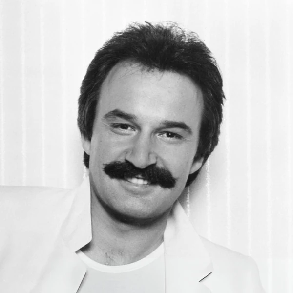
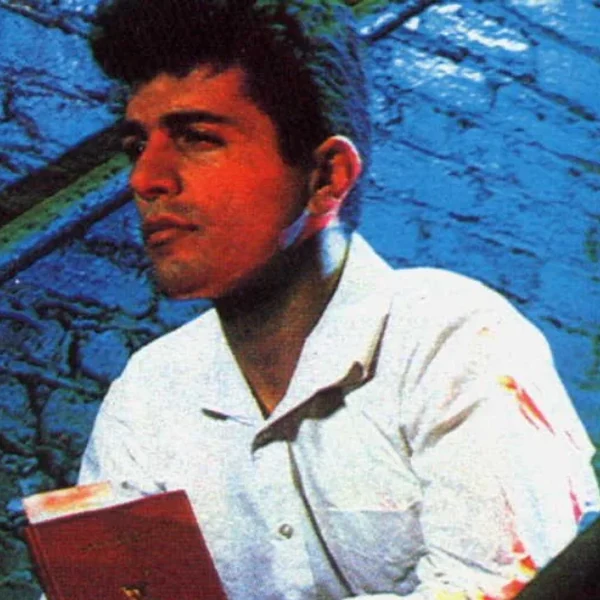
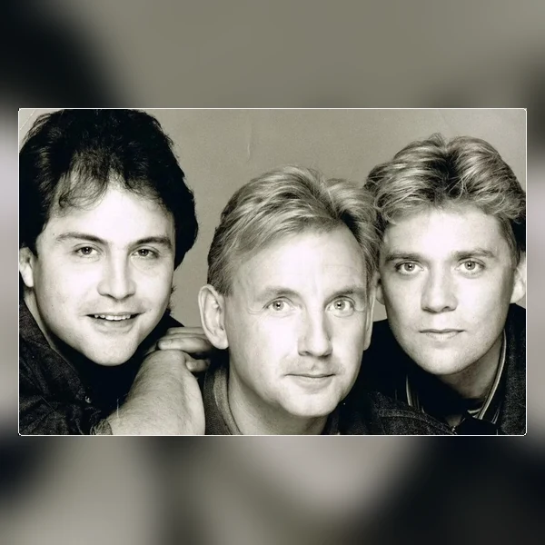
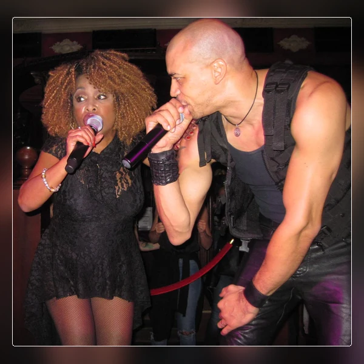
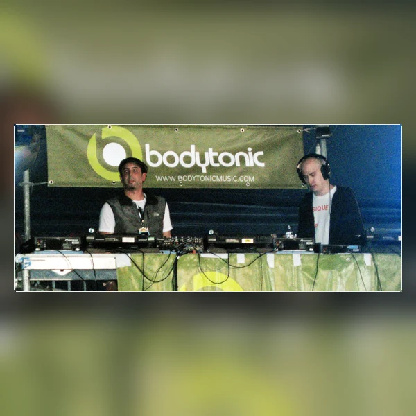

Disco is dance music that grew out of American club culture in the early 1970s, drawing heavily on Soul and Funk. Its most familiar sound has a steady beat that makes it easy to keep dancing, with basslines and other rhythms moving around that pulse. Disco can be sung or largely instrumental, and its arrangements range from full bands to electronic production. Just as importantly, it developed alongside DJs who were learning how to keep a dance floor moving by playing records together. That changed the way producers thought about the length and structure of dance music. A track no longer had to be shaped entirely around radio play if it was going to spend most of its life in a club. Disco eventually became a huge commercial style, but its beginnings were much more local. Its approach to rhythm and mixing went on to influence House and much of the Electronic Dance Music that followed.
Disco is a shortened form of discotheque, a French term for a place where people danced to recorded music instead of a live band. The word had earlier been used for a collection of records, so its connection with dancing came through the places that played them. During the 1960s, English speakers increasingly used Disco as a convenient name for those venues. By the early 1970s, it was also becoming a label for the music associated with them. That distinction matters because DJs were playing Soul and Funk in clubs before Disco had settled into a recognisable musical style of its own. The name did not begin with flashing lights or extravagant fashion, despite what its later reputation might suggest. It began with records and the people who gathered to dance to them.
Disco developed gradually in clubs and private parties, particularly in New York, where DJs played records for dancers who were not always well served by mainstream nightlife. During the late 1960s and early 1970s, selections from Soul and Funk began to be mixed into longer stretches of uninterrupted music. The demand for that kind of experience helped change the records themselves. Producers built tracks around a steady pulse and gave DJs longer instrumental passages to work with. Disco became a major commercial force in the second half of the 1970s, spreading well beyond the underground spaces that had helped create it. The sudden success brought saturation and a public backlash, especially in the United States. Some criticism was simply about musical taste, but prejudice against the Black and LGBTQ+ communities associated with Disco was also part of the reaction. By the early 1980s, the label had become less fashionable, even as its rhythms and studio techniques were helping create House and other dance styles. The music had outgrown the name that was supposedly finished.
Most Disco is built around a regular four beats to the bar, often with a kick drum landing on every beat. That steady foundation leaves plenty of room for the bassline to move, which is where much of the music's character comes from. Guitars or keyboards might pick out short rhythmic patterns, while percussion adds movement between the main beats. Vocals often retain the influence of Soul, even when the arrangements become elaborate. The important point is how all these parts fit together. Disco tends to favour a groove that can carry on for several minutes without needing constant changes of direction. Extended instrumental passages let dancers settle into that rhythm and give DJs places to blend one track into another. Later styles used more electronic sounds, but the basic principle remained much the same. A convincing Disco track usually knows that the rhythm is doing most of the work.





Disco's early clubs provided important meeting places for Black and Latino dancers and for LGBTQ+ people who were excluded or unwelcome in many other nightlife spaces. The dance floor offered a measure of freedom, although the world outside the club had not suddenly become more accepting. As Disco became commercially successful, its image moved into the mainstream and was increasingly sold to audiences far removed from the communities that built it. There is an obvious irony in a culture becoming fashionable just as its origins start to disappear from view. The backlash against Disco was not one single political movement, but racism and homophobia helped shape parts of it. Declaring the genre dead did little to end its influence. DJs kept developing the music, and the club practices associated with Disco helped establish House and modern dance culture. Its history is a reminder that dance music can have social and political importance even when the people on the floor are simply there to enjoy themselves.